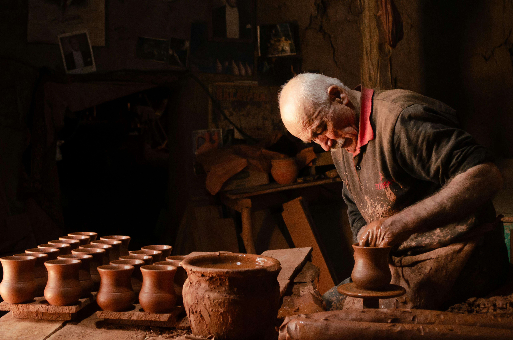

2.000.000 de empleos se automatizarán en España en la próxima década. Programadores, consultores, administrativos... los primeros de la lista. ¿Y los oficios tradicionales? Los últimos. Según un estudio reciente sobre IA y empleo, el 30% de la fuerza laboral tiene exposición cero a la inteligencia artificial, y ahí están carpinteros, ceramistas, herreros, cocineros.
Pero que la IA no te sustituya no significa que no puedas aprovecharla. De hecho, la IA para artesanos puede ser la mejor aliada que vas a encontrar — no para hacer tu trabajo, sino para quitarte de encima todo lo que te aleja de él.
En este artículo vas a encontrar ideas concretas para usar la IA en lo que te roba tiempo de taller — adaptadas a si lo haces todo tú o si ya tienes equipo. Con herramientas reales que puedes probar esta semana, trucos que funcionan en oficios como el tuyo, y ayudas públicas que te ayudan a financiarlo.
Si trabajas con las manos y sientes que la comunicación, la gestión y la promoción te roban horas de oficio, esto es para ti.

Los oficios manuales son los más resistentes a la automatización. Tu saber hacer es insustituible.
La paradoja del artesano digital
El sector artesanal español está más vivo de lo que parece. 64.000 empresas, 208.600 empleos directos, 6.629 millones de euros en ventas anuales, y un crecimiento del 8,7% en los últimos cinco años (KPMG / Días Europeos de la Artesanía, 2025). No es un sector en retirada — es un sector en expansión.
Pero hay un dato que no encaja: solo el 29,3% de esos talleres tiene tienda online. Y cuando hablamos de inteligencia artificial, la cifra se desploma. Mientras que el 21,1% de las empresas españolas con más de diez empleados ya usa IA (INE, primer trimestre de 2025), en microempresas de menos de diez personas la adopción baja al 13,4%. En artesanía, la cifra es prácticamente cero.
Y aquí está lo paradójico: las pymes que sí usan herramientas digitales ahorran más de diez horas a la semana. El 55% de ellas, según un estudio de Qonto y Appinio de 2025. Un 13% llega a liberar más de veinte horas semanales.
Diez horas son medio lunes y medio martes enteros. Imagina lo que harías en tu taller con dos mañanas extra cada semana.
La oportunidad no es "digitalizar tu taller". Es recuperar tiempo para lo que de verdad importa: tu oficio.
Qué puede hacer la IA por un artesano (y qué no)
Antes de hablar de herramientas, vamos a poner algo en claro: la IA no va a hacer tu pieza. No va a sentir cuándo el barro está listo. No va a leer el grano de la madera ni a improvisar una solución a pie de obra.
Esteve Almirall, del Departamento de IA de ESADE, lo resume así: todo lo que está definido con precisión, por complejo que sea, está en riesgo. Pero lo que requiere experiencia, adaptación e intuición es muy difícil de automatizar. Y eso describe exactamente lo que hace un artesano cada día.
Los datos lo confirman. El informe "Observed Exposure" de Anthropic (marzo de 2026) muestra que los trabajadores más expuestos a la IA son programadores (74,5% de exposición), analistas financieros (57,2%) y personal de atención al cliente (70,1%). Los oficios manuales — carpintería, herrería, cerámica, fontanería — tienen exposición cercana a cero.
Y hay una paradoja más: los trabajadores más expuestos ganan de media un 47% más y el 17,4% tiene títulos de posgrado. La IA no está golpeando abajo. Está golpeando arriba.
Entonces, ¿qué puede hacer la IA por ti? Todo lo que te aleja del taller.
Esto sigue siendo tuyo
- Diseñar y crear tus piezas
- Elegir materiales y técnicas
- Tu criterio estético y artístico
- La relación directa con tu cliente
- Adaptarte a lo que surge en el proceso
- Tu saber hacer
Esto puede hacer la IA
- Borradores de textos para RRSS y web
- Planificación de contenido mensual
- Descripciones de piezas para tienda online
- Emails tipo y respuestas a consultas
- Presupuestos y gestión administrativa
- Análisis de qué contenido funciona
Si lo haces todo tú: 6 formas de usar la IA en tu taller
Tu problema no es que no sepas usar redes ni que no quieras comunicar. Es que el día tiene las horas que tiene y tú eres la misma persona que talla, factura, contesta WhatsApps, piensa qué publicar, y hace fotos entre encargo y encargo. La IA te ayuda a hacer cosas que hoy directamente no haces, o haces corriendo y a medias.

La IA no sustituye tu trabajo: te libera tiempo de pantalla para volver al taller.
1 Genera borradores de textos para tus publicaciones
Herramientas como ChatGPT o Claude (ambas gratuitas) pueden generar textos para tus redes, web o tienda online a partir de una descripción sencilla. Describe tu pieza, tu proceso o tu material y pide un texto adaptado al canal. Por ejemplo: "Escríbeme un texto para Instagram sobre un cuenco de cerámica gres hecho con barro local de Almería, cocido en horno de leña. Tono cercano, que hable del proceso."
El truco: No publiques lo que te dé la IA directamente. Úsalo como esqueleto y ponle tu voz. La IA te da la estructura; tú le das el alma.
Coste: Gratuito.
2 Crea un sistema para responder consultas y presupuestos en minutos
Si cada presupuesto te lleva media hora entre pensar, redactar y enviar, multiplica eso por los que haces al mes. Pide a ChatGPT o Claude que te genere plantillas de presupuesto adaptadas a tu tipo de encargos: "Soy ceramista, hago vajillas a medida. Necesito una plantilla que incluya descripción del encargo, materiales, plazo de entrega y condiciones de pago."
El truco: Guarda tres o cuatro plantillas base (presupuesto estándar, encargo especial, consulta rápida, seguimiento). Cada nueva consulta es rellenar huecos, no empezar de cero.
Coste: Gratuito.
3 Describe tus piezas y procesos para tu web o catálogo
Muchos artesanos tienen piezas extraordinarias con descripciones de tres palabras en su tienda online. Sube una foto de tu pieza a ChatGPT o Claude y pide una descripción que incluya materiales, técnica y lo que la hace especial. Dale contexto: "Madera de olivo recuperada de una poda en Jaén. Tallada a mano. Acabado con aceite de linaza."
El truco: Pide siempre varias versiones — una corta (para la ficha), una media (para la web) y una larga (para redes). Del mismo input sacas tres textos.
Coste: Gratuito.
4 Planifica tu mes de contenido en una sentada
Improvisar qué publicar cada día es agotador. Y cuando no se te ocurre nada, no publicas. La IA puede ayudarte a planificar un mes entero de contenido en menos de una hora.
Cómo usarlo: Pide a la IA algo como: "Dame 12 ideas de publicaciones para Instagram para un taller de carpintería especializado en muebles con madera recuperada. Mezcla posts educativos, inspiradores, de proceso y alguno más personal." Luego usa una herramienta gratuita como Buffer para programar las publicaciones.
El truco: No necesitas ideas nuevas cada mes. Rota los mismos tipos de contenido cambiando el tema: proceso del mes, pieza destacada, material del que hablar, pregunta a la comunidad. Con cuatro fórmulas y algo de rotación tienes contenido para medio año.
Coste: Gratuito (ChatGPT/Claude + Buffer plan gratuito).
5 Gestiona lo administrativo sin que te coma el taller
Las pymes españolas dedican el 10,5% de su tiempo de trabajo a tareas rutinarias y administrativas (estudio Qonto-Appinio, 2025). Facturas, emails, seguimiento de pedidos... cosas que no requieren tu talento pero sí tu tiempo.
Cómo usarlo: Para facturación, hay herramientas como Alegra (con plan gratuito) que simplifican el proceso. Para emails repetitivos — confirmaciones de pedido, agradecimientos, seguimientos — pide a la IA que te genere plantillas adaptadas a tu tono y tu oficio.
El truco: Identifica las tres tareas administrativas que más tiempo te quitan cada semana. Empieza automatizando solo esas. No intentes cambiarlo todo de golpe.
Coste: Gratuito o desde pocos euros al mes.
6 Prepara tu comunicación de circularidad con datos reales
Si trabajas con materiales recuperados, reduces residuos, o tu proceso tiene un impacto menor que la producción industrial, tienes una historia que contar. Pero convertir eso en contenido comunicable no es sencillo.
Cómo usarlo: Pide a Claude o ChatGPT que te ayude a convertir datos de tu proceso en mensajes para redes. Por ejemplo: "Uso un 40% de madera recuperada en mis piezas. Ayúdame a convertir eso en tres publicaciones diferentes: una educativa, una inspiradora y una más personal."
El truco: Mapea todo tu proceso circular — de dónde vienen tus materiales, qué haces con los sobrantes, cómo reduces impacto — y genera un "banco de mensajes" reutilizable. Ese banco es oro para tus redes durante meses.
Hay servicios especializados en artesanía, como nuestro Impulso 3D, que te montan este sistema completo: fórmulas de texto, plantillas de diseño, y un cuaderno de trabajo con todo listo para adaptar. Más adelante te cuento cómo funciona.
Coste: Gratuito.
| Necesidad | Herramienta | Coste |
|---|---|---|
| Textos para RRSS | ChatGPT / Claude | Gratis |
| Presupuestos y consultas | ChatGPT / Claude + plantillas | Gratis |
| Descripciones de piezas | ChatGPT / Claude | Gratis |
| Planificación mensual | ChatGPT / Claude + Buffer | Gratis |
| Facturación y admin | Alegra + ChatGPT | Gratis / desde 9€/mes |
| Comunicación circular | Claude / ChatGPT | Gratis |
Si ya tienes equipo pero no sistema: 6 formas de escalar sin perder tu esencia
Tu problema es otro. Ya publicas, ya tienes presencia. Pero mantener la coherencia cuando hay varias personas comunicando, adaptar contenido a tres canales distintos, o saber qué funciona sin convertirte en analista de datos... eso es otra historia. La IA te ayuda a sistematizar lo que ya haces para crecer sin que cada publicación pase por tu mesa.
1 Crea un manual de voz de marca para que todo el equipo comunique igual
Cuando varias personas publican contenido, el tono se dispersa. Una publica más formal, otra más informal, y el cliente no sabe quién le está hablando. Un manual de voz resuelve eso.
Cómo usarlo: Pide a Claude o ChatGPT que te ayude a crear un documento con: cómo habla tu marca (tono, vocabulario, estilo), cómo NO habla (qué evitar), y diez ejemplos reales de textos que suenan a ti vs. textos que no. Dale como referencia tus mejores publicaciones anteriores.
El truco: Incluye una sección de "así sí / así no" con pares de frases. Es lo más práctico para que cualquier persona del equipo entienda la diferencia en dos segundos.
En comunicación artesanal, esto se llama Manual de Marca — un documento que define cómo habla tu proyecto. Es uno de los entregables que incluimos en Impulso 3D, pero puedes crear una versión básica tú mismo con IA.
Coste: Gratuito (si lo haces tú con IA) / Variable (si lo encargas).
2 Adapta un mismo contenido a varios canales sin reescribir cada vez
Un buen contenido no debería vivir solo en Instagram. Pero reescribirlo para LinkedIn, para la newsletter y para la web cada vez es una pérdida de tiempo enorme.
Cómo usarlo: Escribe (o genera) el contenido una vez en su versión más completa. Luego pide a la IA que lo adapte: "Convierte este post de blog en un texto para LinkedIn de 1.500 caracteres, un caption de Instagram de 200 palabras, y un párrafo para la newsletter de esta semana."
El truco: Crea un "prompt de adaptación" fijo que ya incluya las reglas de cada canal (longitud, tono, formato). Así solo pegas el contenido original y la IA hace el resto.
Coste: Gratuito.
3 Monta un calendario editorial compartido con fórmulas reutilizables
No necesitas reinventar cada publicación. Lo que necesitas son fórmulas probadas que rotas cambiando el tema.
Cómo usarlo: Define cinco o seis tipos de publicación que funcionan para tu marca (proceso del día, pieza destacada, historia de material, dato de circularidad, pregunta a la comunidad, detrás de cámaras). Pide a la IA que te genere variaciones de cada tipo para el próximo trimestre.
El truco: Monta el calendario en un Google Sheets o Notion compartido donde cada fila es una publicación con: fecha, tipo, canal, texto base y estado. Con quince o veinte fórmulas de contenido listas para adaptar, planificas un mes en minutos en lugar de horas.
En Impulso 3D, por ejemplo, entregamos un cuaderno de trabajo digital con quince a veinte fórmulas de contenido listas para usar — pero si prefieres montarlo por tu cuenta, la IA te da un buen punto de partida.
Coste: Gratuito (Google Sheets + IA) / Notion plan gratuito.
4 Analiza qué contenido convierte y por qué, sin ser analista
Publicar sin saber qué funciona es como lanzar flechas con los ojos cerrados. La IA puede ayudarte a leer tus propios datos sin necesitar formación técnica.
Cómo usarlo: Herramientas como Metricool (plan gratuito disponible) te dan las métricas de tus redes. Exporta esos datos y pide a ChatGPT o Claude que los interprete: "Estos son mis datos de Instagram del último mes. ¿Qué publicaciones han funcionado mejor y qué tienen en común? ¿Qué debería hacer más y qué menos?"
El truco: Hazlo una vez al mes, no cada día. Un análisis mensual de treinta minutos te da más claridad que mirar las estadísticas a diario sin saber qué buscar.
Coste: Gratuito (Metricool plan básico + IA).
5 Automatiza la programación y distribución multicanal
Si cada publicación la subes a mano, canal por canal, estás gastando horas que podrías recuperar con herramientas sencillas.
Cómo usarlo: Buffer o Hootsuite te permiten programar publicaciones en varios canales a la vez. Para automatizaciones más complejas — por ejemplo, que un nuevo post del blog genere automáticamente una publicación en LinkedIn — herramientas como Make.com o Zapier conectan tus plataformas sin necesidad de programar.
El truco: Empieza por lo más sencillo: programar una semana de contenido en un rato los lunes. Las automatizaciones complejas vienen después, cuando ya tengas el sistema básico funcionando.
Coste: Buffer gratuito / Hootsuite desde 99€/mes / Make.com desde 9€/mes.
6 Convierte tus prácticas circulares en contenido comunicable de forma sistemática
Si tu marca ya tiene prácticas circulares — materiales recuperados, procesos de bajo impacto, reutilización de sobrantes — tienes un activo de comunicación enorme. Pero convertir eso en contenido constante requiere un sistema.
Cómo usarlo: Mapea todo tu proceso circular con la IA: de dónde vienen tus materiales, qué pasa con los sobrantes, qué ahorro de recursos supone tu forma de trabajar. A partir de ahí, pide que te genere veinte ángulos de contenido diferentes sobre el mismo tema.
El truco: Un solo dato circular bien comunicado puede dar para cuatro o cinco publicaciones distintas. La clave es no repetir el mensaje, sino contar la misma historia desde ángulos distintos: el dato, el proceso, la pieza que salió de ahí, la historia del material.
Analizar tu proceso, identificar tu valor oculto, y convertirlo en contenido comunicable es exactamente lo que hacemos en la fase de Diagnóstico 3D. Pero el ejercicio de mapeo lo puedes empezar hoy mismo con estas herramientas.
Coste: Gratuito.
| Necesidad | Herramienta | Coste |
|---|---|---|
| Manual de voz de marca | Claude / ChatGPT | Gratis (DIY) |
| Adaptación multicanal | Claude / ChatGPT | Gratis |
| Calendario editorial | Google Sheets / Notion + IA | Gratis |
| Análisis de contenido | Metricool + IA | Gratis (plan básico) |
| Programación multicanal | Buffer / Hootsuite / Make | Gratis – desde 9€/mes |
| Comunicación circular | Claude / ChatGPT | Gratis |
5 errores que todo el mundo comete al empezar con IA
La IA no es mágica. Mal usada, puede hacerte perder tiempo en lugar de ganarlo. Estos son los errores más comunes — y cómo evitarlos.
Publicar textos de IA sin reescribir. Lo que genera la IA suena correcto, pero no suena a ti. Tu comunidad nota la diferencia. Usa la IA para el borrador, pero la versión final siempre es tuya. El alma de tu contenido no es negociable.
Usar seis herramientas sin estrategia. Más herramientas no significa más resultados. Es mejor dos bien configuradas que seis a medias. Define primero qué necesitas resolver y luego busca la herramienta. Si no, acabas dedicando más tiempo a aprender plataformas que a hacer tu trabajo.
Copiar prompts genéricos de internet. Un prompt pensado para un coach de vida no sirve para un herrero. Adapta siempre al lenguaje de tu oficio, tus materiales, tu forma de trabajar. Cuanto más contexto le des a la IA sobre quién eres y qué haces, mejores resultados obtienes.
Automatizar sin personalizar. La automatización sin tu toque personal te aleja de tu comunidad. Automatiza el proceso (programar, distribuir, organizar), no el mensaje. Cada publicación debería seguir sonando como si la hubieras escrito tú, porque la has revisado tú.
Creer que la IA sustituye la relación con tu cliente. La IA te ahorra tiempo de gestión, pero el vínculo con quien compra tu pieza sigue siendo tuyo. Ningún bot va a transmitir lo que transmites tú contando la historia de un material o explicando por qué tardas tres semanas en una pieza. Eso es insustituible.
Ayudas y financiación para dar el paso
Todo esto tiene un coste — aunque sea de tiempo. Pero hay ayudas públicas que pueden hacer que dar el paso sea más sencillo de lo que piensas.
Kit Digital (Nacional)
El programa del Gobierno de España para digitalización de pymes y autónomos. Desde la última convocatoria, incluye herramientas de inteligencia artificial como categoría financiable. Las cuantías van de 3.000€ para autónomos y microempresas (0-3 empleados) hasta 25.000€ para empresas medianas.
Ayudas autonómicas
Varias comunidades tienen programas específicos. Madrid acaba de lanzar una línea de modernización y digitalización de artesanía con hasta 10.000€ por beneficiario (cobertura del 50%) y otra de formación artesanal con hasta 3.000€. Castilla y León ofrece hasta 30.000€ con subvención del 75% para artesanos con taller reconocido.
Formación gratuita en IA
El Ministerio de Economía ofrece el curso "Elementos de IA", gratuito y online. Google tiene programas de formación en fundamentos de IA a través de Grow with Google. Y varias comunidades autónomas — Madrid, Castilla y León, Andalucía — tienen cursos específicos de IA aplicada, muchos de ellos gratuitos.
| Programa | Territorio | Importe | Para quién |
|---|---|---|---|
| Kit Digital | Nacional | 3.000€ – 25.000€ | Pymes y autónomos |
| Modernización artesanía | Madrid | Hasta 10.000€ | Artesanos y comercios |
| Formación artesanal | Madrid | Hasta 3.000€ | Artesanos |
| Comercio de proximidad | Castilla y León | Hasta 30.000€ (75%) | Artesanos con taller |
| Elementos de IA | Nacional | Gratuito | Cualquier persona |
| Grow with Google IA | Nacional | Gratuito | Profesionales |
Tu hoja de ruta: las primeras 4 semanas
No tienes que cambiarlo todo de golpe. Este es un plan para empezar de forma sencilla y ver resultados reales en un mes.
El sistema de comunicación adecuado te permite crecer sin perder tu esencia artesanal.
¿Y si no quieres hacerlo solo?
Si tras esas cuatro semanas sientes que el potencial es real pero montar el sistema solo te supera, no estás solo en eso. Es lo que nos dicen la mayoría de artesanos con los que hablamos.
Todo lo que has leído en este artículo puedes hacerlo tú. Cada herramienta, cada truco, cada idea está ahí para que la pruebes. Pero seamos sinceros: una cosa es saber que existen seis herramientas gratuitas, y otra muy distinta es configurarlas, conectarlas entre sí, adaptarlas a tu oficio, y convertir todo eso en un sistema que funcione sin robarte más tiempo del que te ahorra.
Para eso creamos Impulso 3D.
Es un sistema de comunicación a medida para talleres y marcas artesanas. Lo montamos nosotros, adaptado a tu oficio, tu proceso y tu voz. Funciona con una metodología en tres fases:
Diagnosticar
Mapeamos tu proceso, identificamos el valor que no estás comunicando, y detectamos oportunidades de circularidad.
Diseñar
Creamos un plan de 90 días con tu kit completo: plantillas, fórmulas de texto, calendario, manual de marca y cuaderno de trabajo.
Difundir
Te montamos un sistema para producir contenido auténtico en minutos. Tú revisas, retocas y publicas.
El punto de entrada es el Diagnóstico 3D — una radiografía de tu comunicación y tu circularidad, desde 90€. A partir de ahí decides hasta dónde quieres llegar.
Porque al final, no se trata de usar más tecnología. Se trata de tener más tiempo para lo que de verdad importa.
¿Quieres un sistema de comunicación adaptado a tu oficio?
Impulso 3D te da las herramientas, las fórmulas y el sistema para comunicar sin perder horas de taller. Empieza con un Diagnóstico 3D.
Conoce Impulso 3D →Preguntas frecuentes
¿Necesito saber de tecnología para usar IA?
¿La IA va a hacer que mi contenido suene genérico?
¿Cuánto tiempo real me va a ahorrar?
¿Qué herramientas necesito para empezar?
¿El Kit Digital cubre herramientas de IA?
Conclusión
La revolución industrial sustituyó peones por máquinas. La inteligencia artificial está haciendo lo contrario: devuelve valor a lo que se hace con las manos.
Pero solo si usas la tecnología para lo que tú no necesitas hacer personalmente. Comunicar, planificar, gestionar, analizar... déjaselo a las herramientas. Y dedica ese tiempo a lo que ninguna IA puede replicar: tu oficio, tu criterio, tu saber hacer.
El futuro se hace con las manos. Nosotros te ayudamos a contarlo.